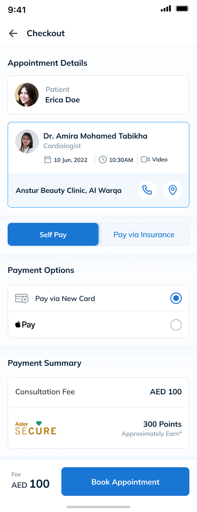
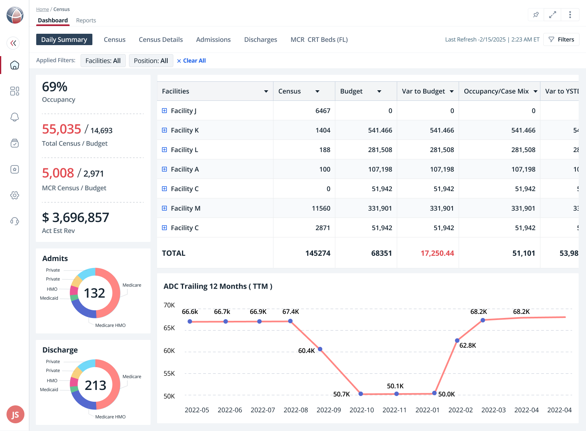

Lead UI/UX Designer · 10+ years
Research → strategy → screens. I own the whole chain, not just the last step.
I’m Deep Vyas, a UI/UX designer with more than ten years of experience in mobile apps, websites and complex web platforms. I run the research, set the design direction, work through the interaction and visual details, and keep the experience consistent while engineering builds it.
01Selected work
Five recent case studies


A portal for admins who
open it twice a year
As design lead on Apexon’s response, I redesigned the portal around what admins need to do next: a Home that flags what to renew, licence states in plain language, and a Copilot for partners. IGEL clicked through the prototype, and we won the engagement.
IGEL is going ahead with the redesign, built from our prototype.
Telling patients what their insurance allows before they book, not after
Insured patients only found out at checkout that they couldn’t book. As lead designer in a team of four, I designed the parts every service shares first, from patient profiles and insurance states to one checkout, so each rule is checked while the patient can still act on it.
Patients book appointments, manage family profiles, and access care through one app.




Making daily pet diabetes tracking easier
Owners test their pet’s glucose at 7 a.m. while holding a restless animal. As the only designer, I ran in-home interviews and a 14-day diary study, then rebuilt onboarding after the first usability round showed setup stopping people before their first reading.
Pet owners can now log readings, track glucose trends, and share reports with their vet.
A customer portal that answers before anyone has to email
The brief asked for a document library, but in the first usability round people couldn’t find their most recent certificate in it. Working from 14 customer interviews and two site visits, I rebuilt the information architecture around the order and designed responsive workflows on top of it.
Customers can now access documents, check orders, and manage consignment stock without emailing an account manager.




Every facility’s numbers, and a nudge when one slips
The brief named features like Alerts and File storage without saying what they were for. I put my questions on the first wireframes, used the client’s answers to set the scope, and gave every report the same actions and layout.
Teams access reports, monitor staffing alerts, and schedule updates from one portal.
02
How I lead and design
Understanding people
I use research to understand what people need, what gets in their way, and which problems deserve attention.
Setting a direction
I turn those insights into clear priorities, weighing user needs, business goals, and technical constraints with the team.
Shaping the experience
I design flows, interfaces, and interactions, using prototypes and feedback to refine how the experience works and feels.
Leading through delivery
I guide designers, work closely with stakeholders and engineers, and stay involved through reviews, handoff, and implementation.
03About
An engineer by training,
working in UI/UX since 2014.
I’m Deep, and I’m based in Ahmedabad, India. I studied electronics and communications engineering, started out designing graphics and interfaces, and have worked in UI/UX ever since, mostly on client projects for companies in very different fields.
Changing domains every few projects taught me to ask good questions early and to lean on the people who know the domain best: users, client teams and engineers. I’d rather we get to the right answer together than have me guess it alone.
Outside client work, I run @the.deep.ux, a UX community of more than 20,000 people.
Senior UI/UX Designer
2022 – present
Apexon
Senior UI/UX Designer
2018 – 2022
TNM Media
UI/UX Designer
2016 – 2018
Infostretch
UI/UX and Graphics Designer
2014 – 2016
Azilen Technologies
04Mentoring
150+ designers mentored on ADPList
Outside client work, I mentor designers through portfolio reviews, design feedback and interview preparation. It’s one-to-one, and it keeps me close to how designers early in their careers think about the work.
Book a session on ADPList ↗150+
Designers mentored on ADPList
Deep provided outstanding guidance on my resume and portfolio, offering specific feedback and examples that will enhance my work. He was able to understand my background experience and guide me through the next steps in my career. I highly recommend booking with him for an exceptional experience!
05Contact
Hiring a UI/UX Lead
or a Senior UI/UX Designer?
Let’s talk.
I’d be glad to hear about your team and what you’re building. Email is the quickest way to reach me.